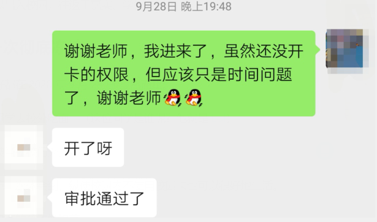
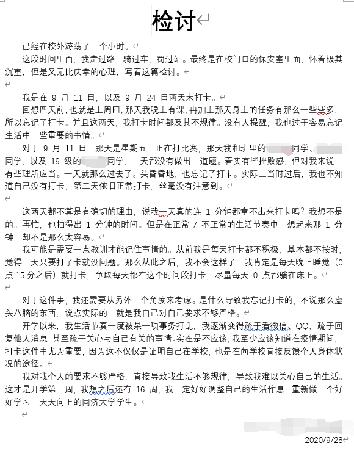
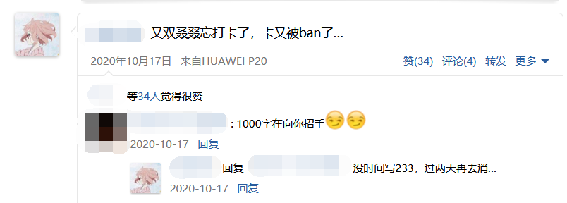
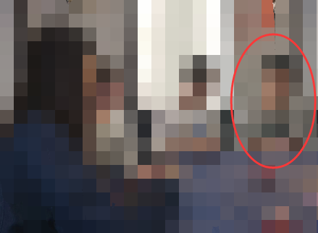
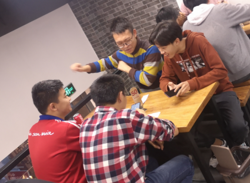
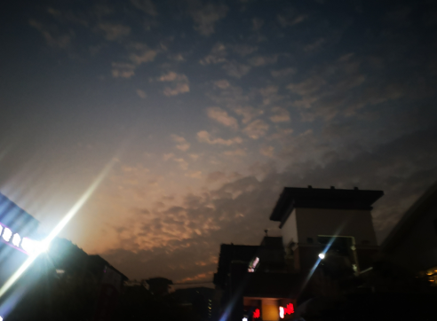
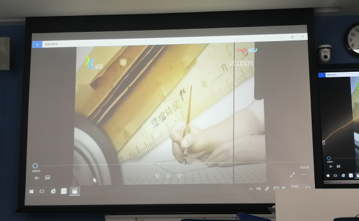
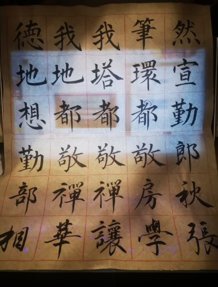

制度
首先声明，我对我校疫情防控方法没有丝毫意见！
我于 2020 年 9 月初返校，相较于网上刷到的其他高校返校 怪现状，我的返校过程十分顺利流畅，简单来说就是三点：
- 风险核销（判断每天是否打卡、是否存在长距离移动）；
- 申请返校（生成返校码）；
- 肉身返校（在校门口走一遍流程）。
在返校途中，总能听到诸如 “这要求也太低了，怎么返校这么容易，能确保我的安全吗”、“流程好繁琐，校园疫情防控不如取消，肯定没事儿”、“如果是为了防控，那不够格；如果是为了流程，那没必要” 之类的声音。
但实际上我觉得我校在这个方面做的恰到好处——既给了学生自由和权益（为什么给了自由，后面会提），又少了许多本该产生的、更有影响力的闲话。
我，打卡
我，自报家门，是学生。
打卡指的是每天使用微信小程序填报问卷，问卷内容比较单调乏味。
在居家防疫时期，我没有哪怕一天中断过打卡（尽管一三五男班长提醒，二四六女班长提醒）。
返校流程也是十分顺利，没有一点毛病可以抓。
回到学校，我由于专业分流，到了一个新的班级，自然就少了班长提醒。再加上我校 “一天不打卡就冻结校园卡” 的制度，我经历了第一次 冻结危机。
第一次遗忘
2020 年 9 月 24 日，我忘记了打卡。回想那天，我其实课没有好多，只是晚上回寝室有点晚，加上前一天睡得比较早。编译原理、操作系统、两门公选，8 个学时难道就能让我完全忘记了打卡这件事了吗？
显然是不能的！
但是它们却可以让我误以为我已经打过卡。
2020 年 9 月 25 日，我在食堂打饭时，校园卡显示无法使用。我并没有反应过来是因为疫情防控方面的事情导致的，只是尴尬地对着大妈笑了笑，然后找同学借了张卡刷。
相比于四平路校区，校园卡在嘉定校区使用并不广泛。在这边，总的来说，校园卡只能做：
- 吃饭；
- 出入宿舍楼；
- 进出图书馆；
- 出入校园；
- 宿舍楼内打水；（水老难喝了）
- 其余用途…
商业化下的校园并不存在使用校园卡的教超，因此没有校园卡，一样可以生活！
更何况！
当时，我的卡并没有被冻结全部权限。
我依然可以出入宿舍楼；
我依然可以进出图书馆；
我依然可以出入校园，往返于嘉实、学校之间。
第一次彻底冻结
所有的美好都在 2020 年 9 月 28 日 戛然而止。
我和一位同学去校外吃面。（这位同学是谁呢？他就是 Eol）
入校时却被当在校门外。
这也让我第一次体会到，纵使校园内不使用校园卡也可以很好地生活。
但依然，没卡的孩子像根草。

在辅导员的热心帮助下，我又一次重返校园。
第一次解封可谓让我付出了不小的代价，我甚至写了 800 字的检讨：

可让我万万没想到的是，我还有第二次冻结。
更意外的是，这次冻结来得如此之快！
第二次冻结
我依旧是以为我打了卡，但实际上我没有。
又是第二天起床吃饭，发现卡不能使用，我对大妈尴尬地笑了笑。这次我倒是立刻反应了过来，“我卡没了” 四个字脱口而出。
只不过这次我没有那么好运，周围没有认识的同学。
只不过我这次也更加好运，排在我后面的同学完全不认识我。
一不做二不休，牙一咬心一横，对着排在后面的美女说了句：“很抱歉，能借刷下你的卡吗，之后我刷你支付宝。”
话说出去之后就后悔了。
应该说 “发微信红包” 的，这样就能要到微信了（？
吃完饭，我试了下我自己的校园卡，权限全无。等我反应过来，已经是晚上了：

没错
没错，10 月 17 日，今天是 11 月 9 日。我还没有去解冻自己的卡。
在此期间，我干了这些事：
我拍了毕业照
我去参加了别人的生日聚会

我参加了第七次人口普查
我一直下馆子（？

我甚至进入了其他寝室楼的厕所（？
我每天都拍一些眼前的美景

我还参加了班会

并且每周练点字（是没好好写的

总之我还做了很多事。从表面看上去，我完全不像一个校园卡被冻结的人。
这，就是我校给予我的 自由和权益。
但是
总有麻烦的地方：
- 我进出宿舍楼必须跟着别人，因为我卡刷不了；
- 我每天只能进一次图书馆，因为第一次刷脸进入。然而出图书馆需要刷卡，我无法刷卡，第二次刷脸进入会提示 “已经重复刷卡”；
- 我要是想吃食堂，比如有人替我刷卡，这事儿说难听点就是 “被包养了”；
- 我无法正常进出电信楼；
- 我无法正常出入校园。
最麻烦的是，我不能参与 体测！
我校体测对每位学生都十分关键，不及格或者不参与的话，是影响毕业的。
体测绑定校园卡，大大减少了工作人员的工作量，这是极好的！
但是，我的卡被冻结，意味着我丧失了所有校园卡的权限，包括体测。
最后
将近 一个月的无卡生活，让我体会到了校园卡对于一个学生的重要性。
你说我能在未来的一段时间里保证每天打卡吗？我自己都不敢咬定。
明天我就要恢复校园卡权限了。如果还有第三次被冻结，我一定再写一次冻结感想。